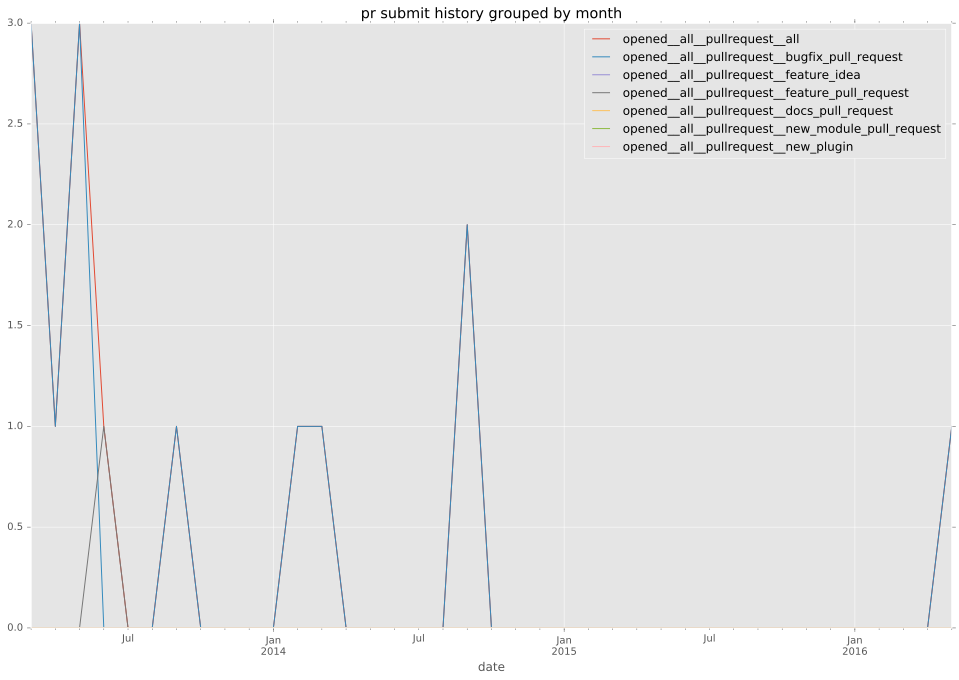
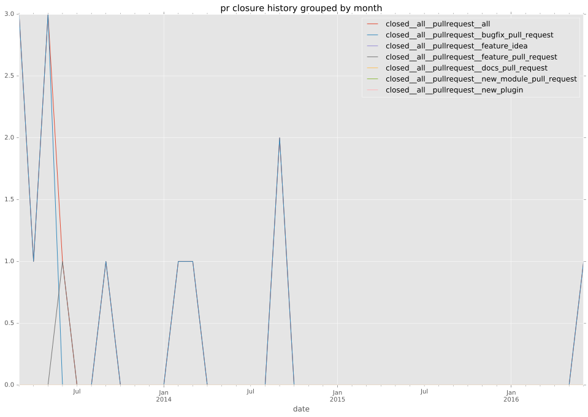

authors
- chrishoffman
maintainers
- manuel-sousa
- chrishoffman
- romanek-adam
contributors
- chrishoffman : 15 commits
- cstorey : 7 commits
- puzan : 3 commits
- mpdehaan : 3 commits
- jctanner : 3 commits
- mavimo : 1 commits
- jpmens : 1 commits
- bcoca : 1 commits
total issue counts
bugfix pull request: 16
feature pull request: 2
pullrequest: 18
issue: 2
bug report: 2
issue history
pullrequest history


days open by issue type
feature pull request
count: 2
std: 0.0
min: 0
max: 0
median: 0.0
mean: 0.0
all
count: 27
std: 86.7769679422
min: 0
max: 438
median: 0.0
mean: 32.6296296296
pullrequest
count: 0
std: nan
min: nan
max: nan
median: nan
mean: nan
bugfix pull request
count: 23
std: 33.1363812576
min: 0
max: 89
median: 0.0
mean: 19.2608695652
issue
count: 0
std: nan
min: nan
max: nan
median: nan
mean: nan
bug report
count: 2
std: 309.71277016
min: 0
max: 438
median: 219.0
mean: 219.0
closures grouped by total days open